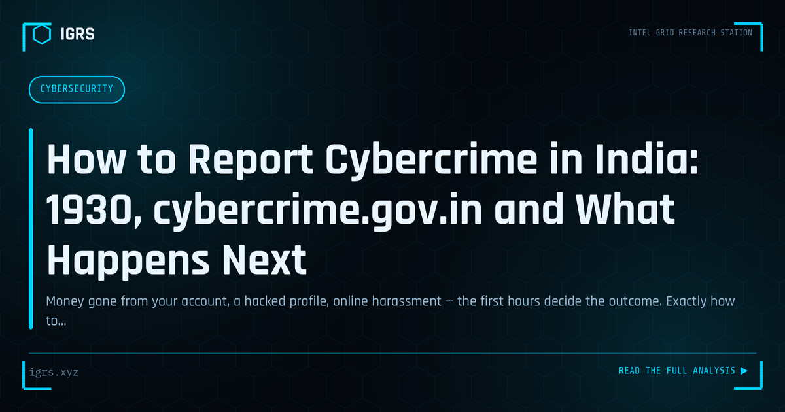

How to Report Cybercrime in India: 1930, cybercrime.gov.in and What Happens Next
| File No. | OD-012/2026 |
| Subject | Citizen's procedural guide to cybercrime reporting channels in India |
| Category | Cyber Awareness |
| Author | Manuj Kumar Pandey |
| Published | 2026-06-10 |
| Reading time | 12 minutes |
Money gone from your account, a hacked profile, online harassment — the first hours decide the outcome. Exactly how to report cybercrime in India and what to expect afterward.
Understanding India's Cybercrime Reporting System
India has built one of the world's more accessible cybercrime reporting infrastructures, anchored by the Indian Cyber Crime Coordination Centre (I4C) under the Ministry of Home Affairs. For citizens and investigators alike, knowing exactly how to navigate this system — and how fast to act — often determines whether stolen money is recovered and whether a case progresses. This guide explains the complete reporting process, the evidence to preserve, and what happens after a complaint is filed.
The Two Channels Every Indian Should Memorise
There are two primary, official channels for reporting cybercrime in India, and both should be used together for financial fraud:
| Channel | Use Case | Availability |
|---|---|---|
| 1930 Helpline | Financial fraud — fastest route to freeze funds | 24x7 phone |
| cybercrime.gov.in | All cybercrime — formal written complaint | Online portal |
The number 1930 connects to the Citizen Financial Cyber Fraud Reporting and Management System, which is integrated with banks and payment intermediaries. The portal cybercrime.gov.in handles the full range of cybercrime including fraud, harassment, sextortion, and content-based offences, and routes complaints to the appropriate state cyber cell.
Reporting Financial Fraud: The Exact Sequence
For financial fraud, the order of actions matters enormously. Follow this sequence precisely:
- Step 1 — Call 1930 immediately. Provide transaction details and UTR numbers. The operator initiates a freeze request to the beneficiary bank.
- Step 2 — File at cybercrime.gov.in. Register the formal complaint and obtain an acknowledgement number.
- Step 3 — Contact your bank. Use the complaint number to request an account freeze and lien marking on the fraudulent transaction.
- Step 4 — Preserve all evidence. Screenshots, statements, communications — before anything is deleted.
- Step 5 — File an FIR if required. For larger amounts or where directed, approach the cyber cell or local police station.
The window for freezing funds is measured in hours. Each step taken faster increases the probability that money is intercepted in the first-layer beneficiary account before it is laundered through a mule network.
What Evidence to Preserve Before It Disappears
Digital evidence is fragile — accounts get deleted, messages vanish, and pages are taken down. Preserve everything immediately:
| Evidence Type | How to Preserve |
|---|---|
| Transaction records | Download bank statement PDF with UTR numbers |
| Chat / messages | Export with media, screenshot with visible timestamps |
| Caller details | Note number, call time, duration; record if possible |
| URLs and profiles | Screenshot and archive via web.archive.org |
| Email evidence | Save full headers, not just the visible message |
For evidence destined for court, compute SHA-256 hash values at the time of collection. This proves the evidence has not been altered and supports admissibility under Section 63 of the Bharatiya Sakshya Adhiniyam 2023.
Reporting Harassment, Sextortion and Account Takeover
Not all cybercrime is financial. For harassment, stalking, sextortion, and account takeover, the reporting approach differs slightly:
- Sextortion: Do not pay. Report at cybercrime.gov.in, preserve all communications, and block the perpetrator. The portal has a dedicated category for this.
- Account takeover: Immediately attempt account recovery, enable MFA, and report to both the platform and cybercrime.gov.in.
- Online harassment: Preserve evidence first, report to the platform for content removal, then file with the cyber cell under the appropriate BNS and IT Act sections.
- Women and children: The portal offers a confidential reporting option for crimes against women and children, including anonymous reporting.
Applicable Legal Sections
Understanding which sections apply helps you frame the complaint correctly:
| Offence | Section | Act |
|---|---|---|
| Cheating / fraud | Section 318 | BNS 2023 |
| Identity theft | Section 66C | IT Act 2000 |
| Personation by computer | Section 66D | IT Act 2000 |
| Obscene content online | Section 67 | IT Act 2000 |
| Criminal intimidation | Section 351 | BNS 2023 |
| Stalking | Section 78 | BNS 2023 |
Note that Section 66A of the IT Act was struck down by the Supreme Court in Shreya Singhal v. Union of India (2015) and must never be cited. Using a repealed or struck-down provision can compromise a case.
What Happens After You File
Once a complaint is registered, it is routed to the relevant state cyber cell based on jurisdiction. For financial fraud, the freeze request triggers bank-side action that can hold funds pending investigation. The complaint may be converted into an FIR, after which formal investigation begins — collecting bank records, serving legal notices, analysing the money trail, and identifying suspects.
Cybercrime jurisdiction in India is deliberately flexible: under Section 13 of the BNSS, a complaint can be filed where the victim resides, where the offence occurred, or where the consequences were felt. This means a victim is never forced to travel to where the fraudster operates. If a police station refuses to register an FIR, the victim can escalate to the Superintendent of Police or approach a Magistrate under Section 175 of the BNSS.
Tracking Your Complaint and Following Up
The cybercrime.gov.in portal allows you to track the status of a registered complaint using the acknowledgement number. Persistent, documented follow-up matters — many cases stall not because of legal obstacles but because of a lack of follow-through. Keep copies of every complaint number, FIR, and communication. For financial fraud, coordinate between the cyber cell and your bank, since recovery ultimately requires both the investigation and the bank's cooperation.
Prevention and Awareness
The best cybercrime response is avoiding victimhood in the first place. Core public advisories include: never share OTPs or UPI PINs, verify before clicking links, be sceptical of urgency and authority in unsolicited calls, use strong unique passwords with MFA, and remember that no legitimate official conducts arrests or demands payment over a video call. Awareness, combined with knowing exactly how to report when something does go wrong, is the most effective defence available to every Indian citizen.